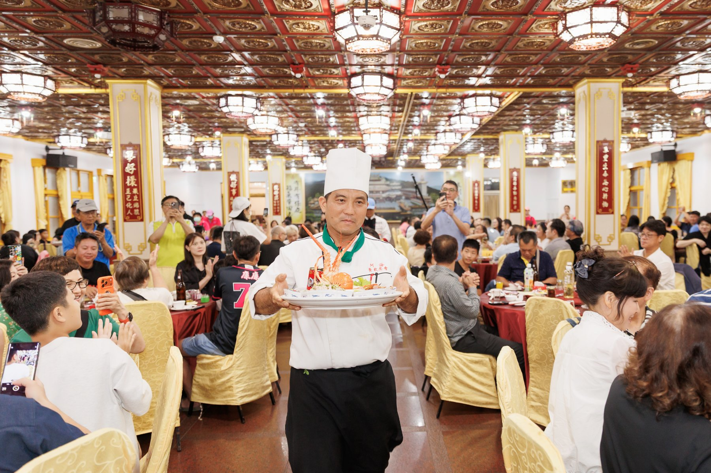
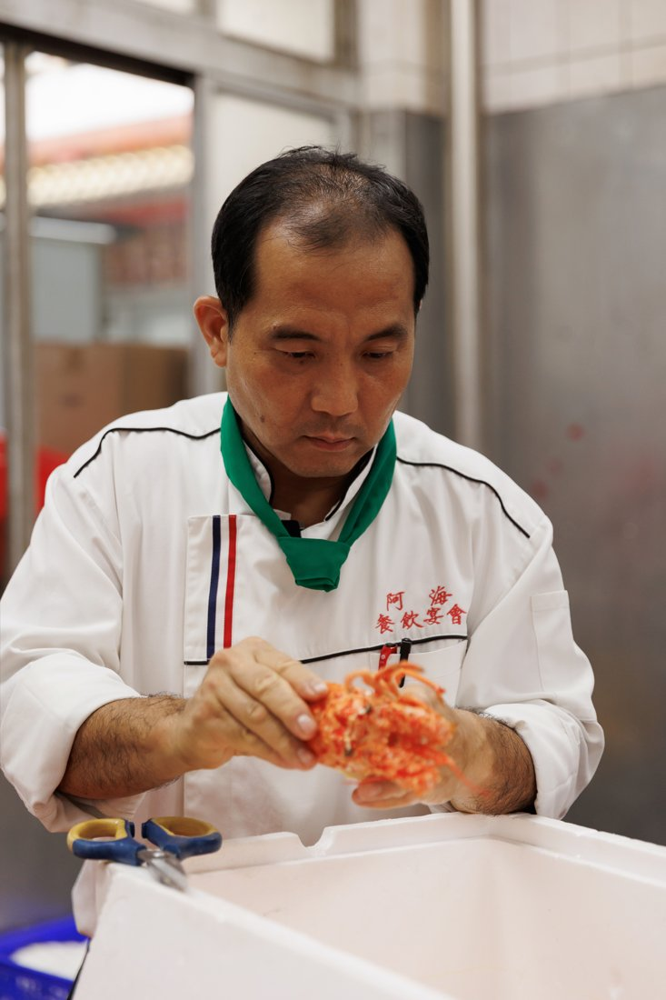
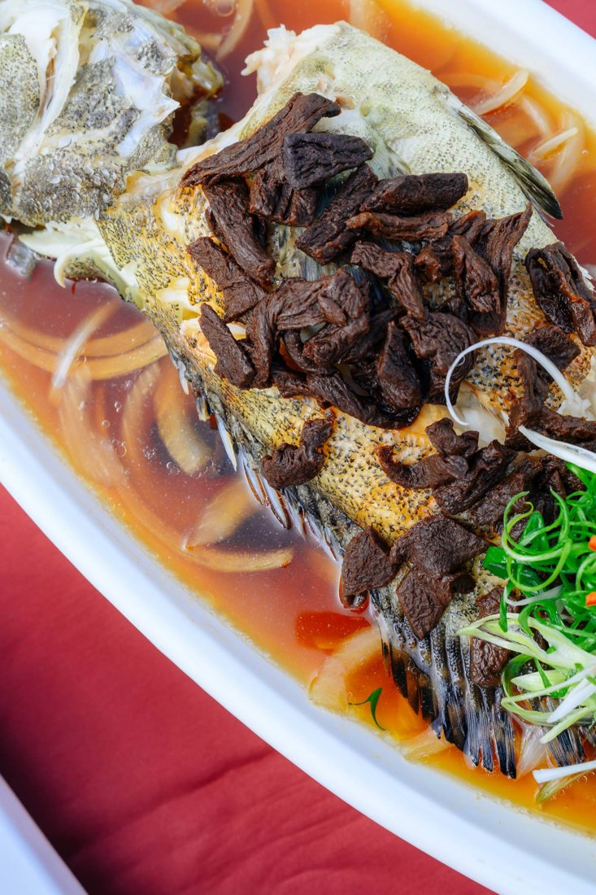
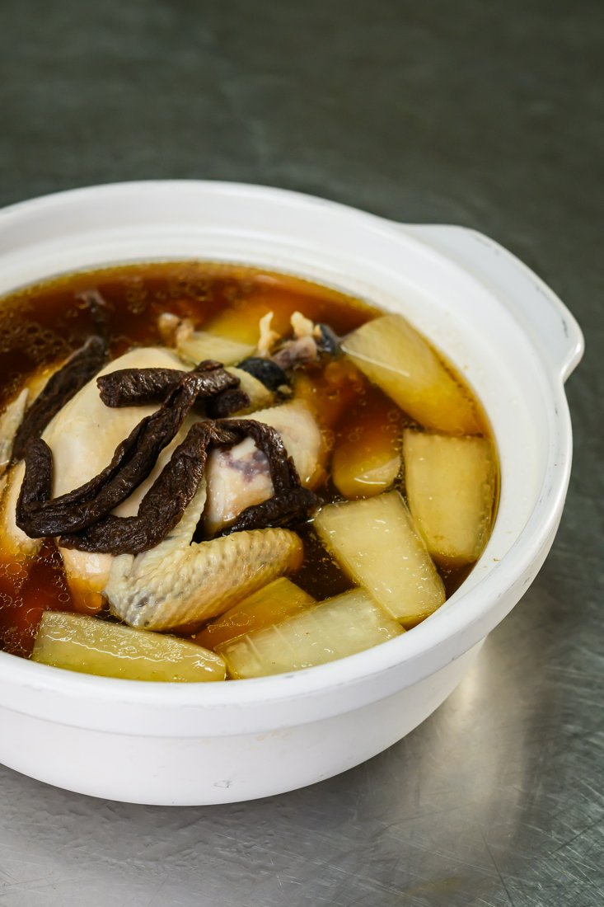
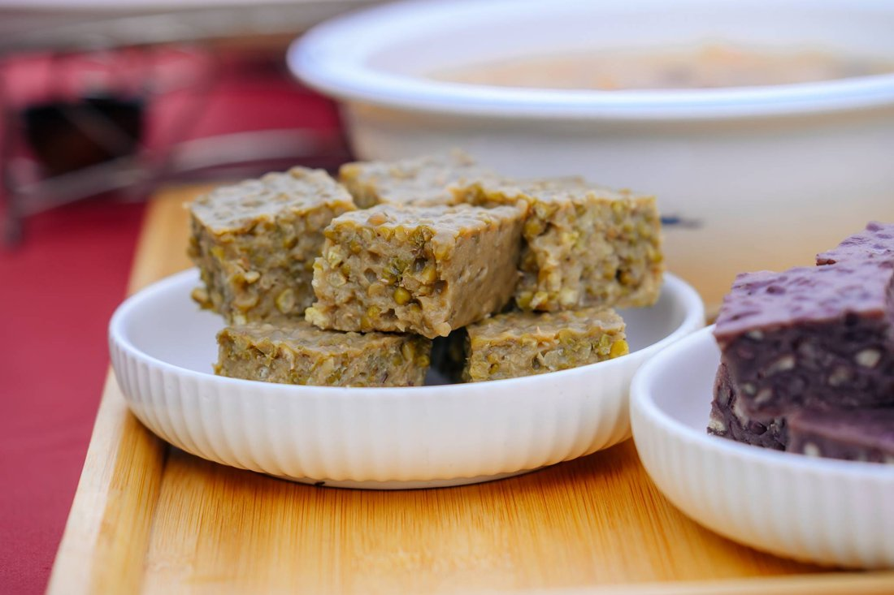
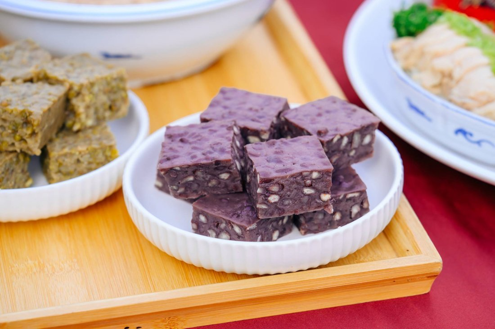

THE BANQUET
一千人同席 寫下北流新紀錄
北流首度舉辦千人辦桌，一百張圓桌、十道大菜，邀請一千人吃下新年第一席。文化祭最後一夜，邊吃台菜、邊看吉董演唱與幾米魔術，最後一起抽獎祈福，以台灣最有人情味的宴席寫下北流新紀錄。
OPENING BANQUET · 2027.01.03 SUN
北流首場千人辦桌
一千人同席寫歷史
2027.01.03（日）18:00－20:30
17:00開始報到
台北流行音樂中心南基地戶外空間
早鳥每人 NT$3,980｜10/31 23:59 截止

THE BANQUET
北流首度舉辦千人辦桌，一百張圓桌、十道大菜，邀請一千人吃下新年第一席。文化祭最後一夜，邊吃台菜、邊看吉董演唱與幾米魔術，最後一起抽獎祈福，以台灣最有人情味的宴席寫下北流新紀錄。
PARTNER
豐辦桌走訪各地總舖師、記錄料理手藝、策劃主題宴席，也透過Podcast《豐食光》分享台菜文化。這一次，由豐辦桌策劃北流首場千人辦桌，把正宗美濃客家宴席帶到台北。
豐辦桌 Facebook ↗CHEF
阿海師劉春樹出身高雄美濃，來自台灣少見、傳承至第四代的總舖師世家。這一晚，他專程北上掌杓，把家族手藝、客家風味與南部辦桌的火候端上北流。





PROGRAM
TICKETS